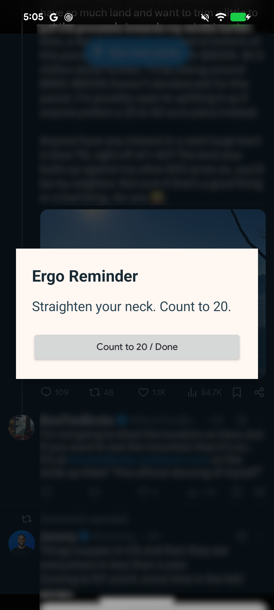

Scroll breaks. Without schedules or start buttons.
The break reminder you don’t have to remember. Pick the apps where you need a scroll break. Ergo watches how long you actually use them and reminds you after 20 minutes.
No schedule to set. No session timers to start. No daily limit. No blocking.
Don't get tech neck. ↗
9:41••• ▰
Your daily scroll ✳
Just one more post…
ERGO REMINDERTime for a little break.
It’s been 20 minutes. Look up. Move a little. Reset.
Got it
◗ 20 minutes. Break time.Reminder illustration · actual app appearance may vary
Made for AndroidRuns automaticallyApp data stays on your phone
Why build yet another app?
I couldn't find a scroll break app I liked. So I built my own.
I don't want to stop scrolling, I just want breaks for my neck and eyes.
↗
I didn't want to set a schedule.
Schedules are finicky to set up, and never work quite right in real life. I'd either get a reminder when I wasn't using my phone, or while I was using it for work.
Reminders based on when you're actually using the apps.◗
I won't remember to press start.
The whole point of scrolling is that it's mindless. If I have to press Start every time, I'll usually forget to.
Press Start Monitoring once during setup. Then off you go.☀
I don't want to block apps.
I didn't want to stop scrolling. I just wanted to stop scrolling for hours without looking up.
I know I'm wasting time. I don't need an app to lecture me.

Break time - stand up, roll your neck, move around some, then back to scrolling.
How it works
Set it and forget it.
Choose your apps
Pick the apps where you need a scroll break. Insta, TikTok, the weather app - we don't judge.
Use your phone as usual
When you use one of those apps, the timer starts automatically. There's no session timer to start.
Get a reminder for a scroll break
After 20 minutes, Ergo reminds you. Dismiss it when you're done, and get back to scrolling.
From the community
Scroll without a stiff neck.
No spying
We take privacy very seriously.
Ergo tracks foreground app time. It doesn’t read your messages, inspect what’s on your screen, or track what you type.
You press "Start Monitoring" once during setup, and again after a reboot. That's it.
Does it detect actual scrolling?
No. Ergo counts foreground time in the apps you select. It doesn’t detect gestures or inspect what you’re reading.
Will it block my apps or force a break?
No. The reminder is informational and dismissible. Ergo doesn’t block, close, or minimize your apps.
When does the timer reset?
When you leave a monitored app, the timer resets after 30 seconds. Foreground status is checked once per second, so that window can vary slightly.
What permissions does it need?
Usage Access lets Ergo detect the foreground app. Overlay permission lets it show reminders. An optional battery optimization exemption can help keep reminders reliable. See the setup and support guide.
Where does my data go?
Your settings and statistics stay on your phone. There’s no cloud sync, and crash reporting is off unless you explicitly opt in. Read the full privacy policy.